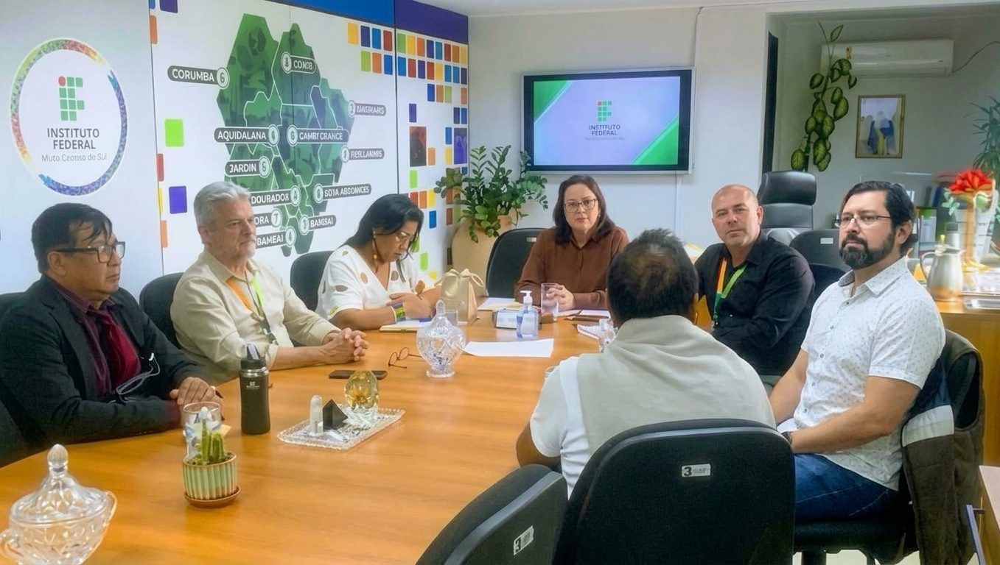
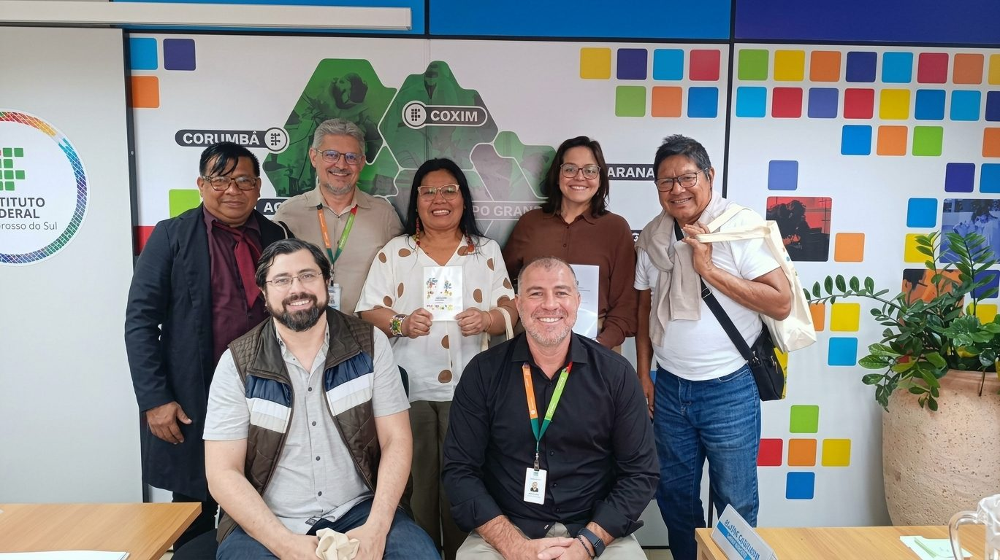
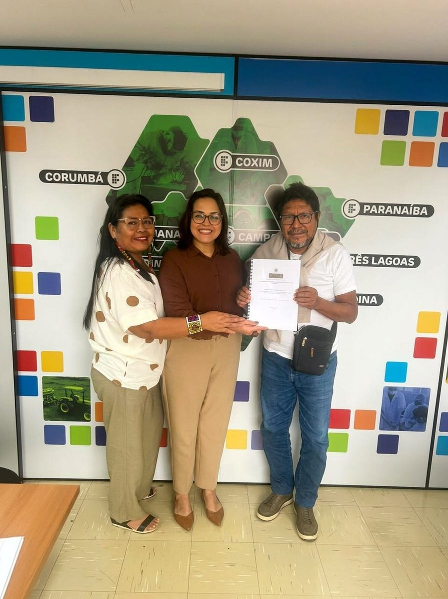

ICET, CMDDI, FOCAMS e UNIPBRAS iniciam tratativas com o IFMS para firmar convênio
Reitora, pró-reitor de Extensão e diretor-geral do Campus Campo Grande do Instituto Federal receberam lideranças indígenas para discutir um selo editorial de autoria indígena e um núcleo de propriedade intelectual e conhecimentos tradicionais.
Ler na íntegra
Em reunião realizada na sexta-feira, 9 de outubro, começaram as tratativas para um convênio entre o Instituto Federal de Mato Grosso do Sul (IFMS) e quatro organizações indígenas do estado: o Instituto Cacique Enir Terena (ICET), o Conselho Municipal dos Direitos e Defesa dos Povos Indígenas (CMDDI), o Fórum dos Caciques de Mato Grosso do Sul (FOCAMS) e a União Nacional dos Produtores e Agricultores Indígenas do Brasil (UNIPBRAS).
O encontro reuniu a reitora do IFMS, Dra. Elaine Borges Monteiro Cassiano; o pró-reitor de Extensão, Dr. Anderson Martins Corrêa; e o diretor-geral do Campus Campo Grande, Dejahyr Lopes Junior. Pelo lado indígena, participaram a presidente do ICET, Maria Auxiliadora Bezerra; o presidente do CMDDI e da Cooperativa Estadual dos Povos Indígenas de Mato Grosso do Sul (COOPIMS), Lisio Lili; e o presidente do FOCAMS e da UNIPBRAS, Aguinaldo Arruda Areco. Esteve presente ainda Germano Coelho Ramos Rocha-Silva, conselheiro do CMDDI, secretário-geral do ICET, mestre em Propriedade Intelectual e Transferência de Tecnologia para a Inovação e autor do projeto que embasa a proposta.
O projeto apresentado ao IFMS tem duas frentes. A primeira é a expansão do selo editorial do ICET em uma biblioteca digital de autoria indígena, sem edição em papel, com curadoria técnica do próprio Instituto e publicação conjunta nos portais das instituições parceiras. A segunda é a criação de um núcleo permanente de propriedade intelectual, biotecnologia e conhecimentos tradicionais, que vai documentar, com consentimento prévio, livre e informado das comunidades, obras, elementos culturais e saberes de medicina tradicional dos povos indígenas do estado.
Segundo o projeto, a documentação reunida pelo núcleo servirá de base para estudos técnicos que subsidiem pedidos de proteção junto ao Instituto Nacional da Propriedade Industrial (INPI), acordos de repartição de benefícios e, no médio prazo, propostas normativas em âmbito municipal e estadual.
A autoria, a curadoria e a titularidade do selo permanecem com o ICET e com o CMDDI. Ao IFMS caberia oferecer respaldo técnico e acadêmico, por meio do Núcleo de Inovação Tecnológica e das pró-reitorias de Pesquisa e de Extensão. A proposta prevê, ainda, a cooperação do Ministério Público de Mato Grosso do Sul.
O ICET já mantém editora, selo e conselho editorial próprios e tem uma obra publicada, Autodeterminação Cultural, sobre a cerâmica Terena, a ancestralidade Arawak e a propriedade intelectual coletiva, escrita por seis coautores. Pelas regras do selo, autores não indígenas só podem participar de uma publicação se ao menos um dos autores for indígena, e o Instituto arca com os custos de registro de direitos autorais e de ISBN.
As tratativas estão em fase inicial. O instrumento jurídico da parceria e os termos da cooperação ainda serão definidos e dependem dos trâmites internos de cada instituição. A iniciativa parte de uma convicção registrada no próprio projeto: a história, a cultura e os conhecimentos de um povo ganham força, e proteção jurídica, quando são documentados, narrados e geridos por quem os vive.
Registros do encontro

